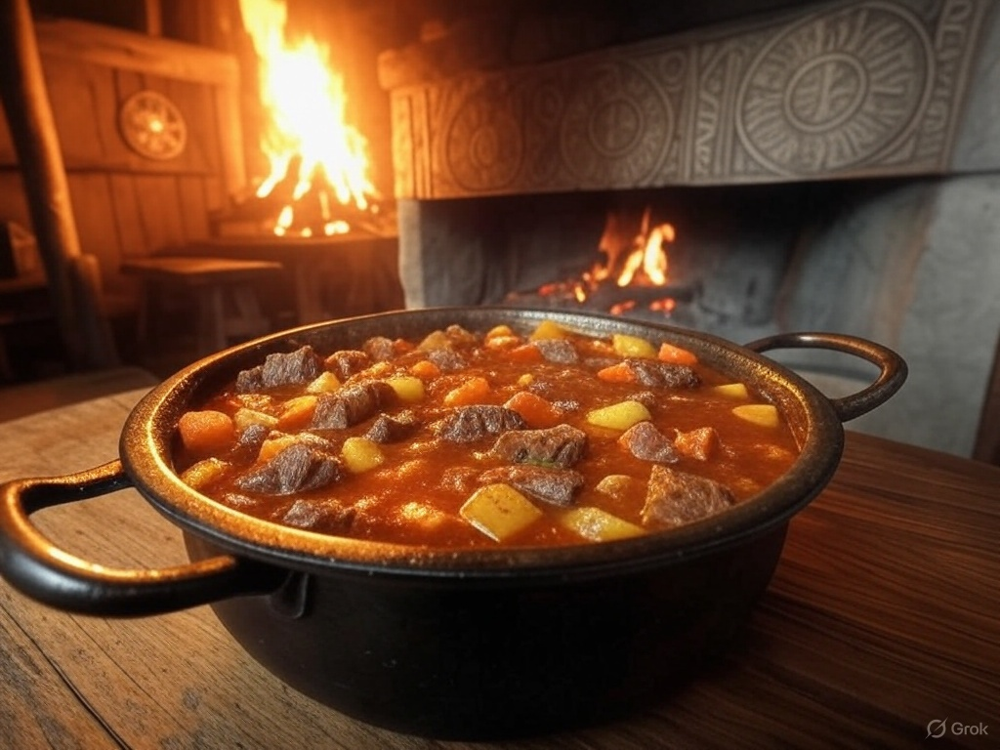

Home
Raven’s Feast Stew (Beef and Root Vegetable Stew)

Odin is accompanied by his ravens, Huginn (thought) and Muninn (memory), symbolizing his pursuit of knowledge.
This hearty stew reflects the sustenance needed for warriors and wanderers, evoking the rugged Norse
landscape.
Description:
A rich, warming stew with ingredients that would have been available in Viking Age Scandinavia.
Ingredients:
- 3 lbs (0.9 kg) beef chuck, cubed
- 1 large onion, chopped
- 2 parsnips, peeled and sliced
- 2 carrots, peeled and sliced
- 1 turnip, peeled and diced
- 4 cups (1 liter) beef broth
- 1 cup (240 ml) ale or beer (a nod to Odin’s love of feasting)
- 2 sprigs fresh thyme
Salt and pepper to taste
Instructions:
- In a large pot, brown the beef over medium-high heat. Remove and set aside.
- Sauté the onion in the same pot until translucent.
- Add the vegetables, broth, ale, thyme, and browned beef. Bring to a boil, then reduce to a simmer.
- Cook for 1.5–2 hours, or until the meat is tender and the vegetables are soft. Season to taste.
- Serve hot, ideally with flatbread or barley bread to soak up the broth.